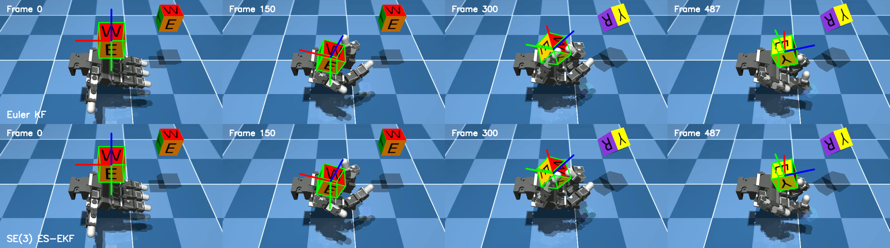
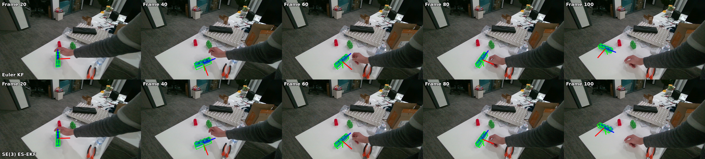

Real-time 6D object pose tracking video will be inserted here.
Abstract
FoundationPose++ improves 6D object pose tracking by combining FoundationPose with Kalman-filter-based temporal prediction and an additional 2D tracker. Its original filter, however, represents orientation using XYZ Euler angles and performs prediction and correction directly in Euclidean coordinates. This project reformulates that temporal filtering component as an error-state Extended Kalman Filter on \(SE(3)\). The nominal pose remains on the rigid-body group, while local pose errors and corrections are represented in the tangent space. Experiments in simulation, offline RGB-D tracking, and a real-time ZED setup show tracking performance comparable to the original Euler-angle formulation under the tested conditions. The main contribution is therefore a geometrically consistent reformulation of rigid-body pose prediction, pose error, and state correction rather than a universal improvement in numerical accuracy.
Method
FoundationPose++
FoundationPose++ combines FoundationPose with Kalman-filter-based temporal motion prediction and an additional 2D tracker. Its per-frame tracking pipeline is preserved in this project.
The original Kalman filter uses the Euclidean state \[ \mathbf{x}_k = \begin{bmatrix} \mathbf{p}_k & \boldsymbol{\theta}_k & \mathbf{v}_k & \dot{\boldsymbol{\theta}}_k \end{bmatrix}^{T} \in \mathbb{R}^{12}, \] where \(\boldsymbol{\theta}_k\) denotes XYZ Euler angles.
Why \(SE(3)\)?
A rigid-body pose naturally belongs to \(SE(3)\). In the original formulation, however, rotation is predicted and corrected directly in Euler-angle coordinates. This introduces a mismatch between the Euclidean filter representation and the geometry of 3D rigid-body motion.
\(SE(3)\) Error-State EKF
The nominal rigid-body pose remains on \(SE(3)\), while the EKF estimates only local errors in the tangent space. A left-multiplicative pose-error convention is used for correction.
Pose Residual
The relative pose between the FoundationPose observation and the predicted pose is mapped to a local residual:
EKF Update
The local residual is fused using the standard Kalman update:
\(SE(3)\) Injection
The estimated pose-error component is mapped back to the group and injected into the nominal pose:
Prediction
The corrected pose and covariance are propagated to the next frame:
Experiments
Experiment I — Simulation with Ground Truth
A dexterous robotic hand manipulates a cube in MuJoCo while a fixed RGB-D camera records 504 frames. Ground-truth object poses are available for every frame.

Translation
| Method | MAE | RMSE | Max |
|---|---|---|---|
| Euler KF | 0.390 | 0.423 | 0.869 |
| SE(3) ES-EKF | 0.389 | 0.422 | 0.879 |
Values in mm.
Rotation
| Method | MAE | RMSE | Max |
|---|---|---|---|
| Euler KF | 0.702 | 0.734 | 1.566 |
| SE(3) ES-EKF | 0.703 | 0.735 | 1.561 |
Values in degrees.
ADD
| Method | Mean | RMSE | Max |
|---|---|---|---|
| Euler KF | 0.570 | 0.594 | 1.021 |
| SE(3) ES-EKF | 0.569 | 0.593 | 1.023 |
5000 sampled mesh points; values in mm.
Result: both filters achieve nearly identical quantitative accuracy under the relatively smooth motion in this experiment.
Experiment II — Offline RGB-D Tracking
A 116-frame RGB-D sequence of a textured LEGO block contains faster motion and larger inter-frame pose changes than Experiment I. Ground truth is not available, so the comparison is qualitative.

Result: both filtering configurations maintain continuous tracking in the tested sequence, with no evident qualitative difference.
Experiment III — Real-Time Tracking
A ZED RGB-D camera tracks a manually moved mustard bottle. The three configurations are FoundationPose alone, FoundationPose + Euler KF, and FoundationPose + \(SE(3)\) ES-EKF. OSTrack provides the additional 2D measurement in the filtering-based configurations.
Real-time comparison video will be inserted here.
Result: both filtering-based configurations maintain stable real-time tracking during the tested object motion, demonstrating that the \(SE(3)\) ES-EKF can be integrated into the online RGB-D tracking pipeline.
Main Finding
The contribution of the proposed \(SE(3)\) ES-EKF is not a universal improvement in pose accuracy or tracking robustness. Instead, it provides a geometrically consistent formulation of rigid-body pose prediction, pose error, and state correction while preserving the original FoundationPose++ motion-prediction and 2D measurement-fusion strategy.
Limitations & Future Work
- Only a limited number of objects and motion sequences are evaluated.
- Accurate ground-truth poses are available only in simulation.
- Future work should include more challenging motion, larger inter-frame rotations, and external real-world ground truth.